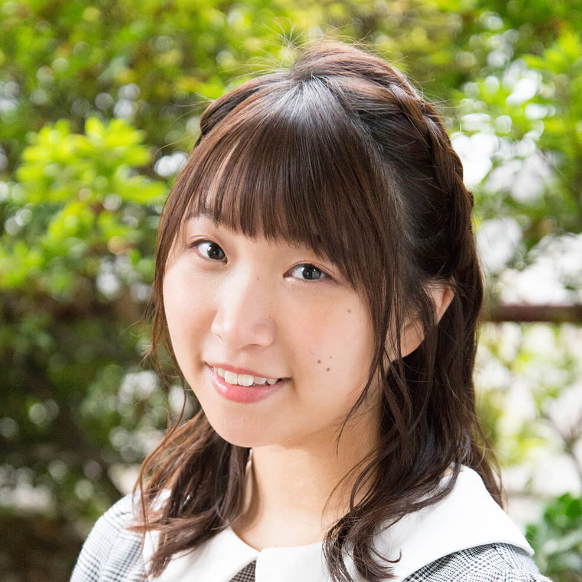

【声マガ・インタビュー】篠原 侑
TOPICS
PROFILE
アイムエンタープライズに所属する篠原侑さんは、熊本県出身の4月30日生まれ。『メルヘン・メドヘン』（李雪蘭役）、『ハッピーシュガーライフ』（国塚めい役）、『京都寺町三条のホームズ』（北本久美役）等に出演。2018年10月放送の『となりの吸血鬼さん』では、天野灯役で出演。
高校時代には和太鼓部と競技かるた部に所属、他にも合気道、水泳、ピアノ、尺八と多彩な趣味と特技を持っている篠原さん。面白そうだと感じたら、直感を信じて迷うことなくチャレンジするという好奇心旺盛な篠原さんに、声優をめざしたきっかけと日本ナレーション演技研究所（以下、日ナレ）で学んだことや、今後の目標についてお話していただきました。
声優という職業を教えてくれたのは父
声優という仕事を意識したのはいつ頃ですか？
私は小学生の頃まではずっと歌手になりかたったんです。でも、中学にあがる時に父が映画『ライラの冒険 黄金の羅針盤』の、日本語吹き替え版の声優を決めるオーディションが開催されるという記事を見つけてきたんです。そして私に「声優になれば、歌も歌えるし、演技もできるし、ダンスだって踊れるんだよ」と教えてくれたんです。
それがこの職業を知ったきっかけだったんですね。
はい。それからすぐに声優について調べてみました。それまではアニメはアニメ、キャラクターはキャラクターという独立したものとしか考えていなかったのですが、声優という仕事を意識してからは、誰がアニメのキャラクターに声をあてているのか興味を持つようになりました。そして声優になりたい、という気持ちもどんどん強くなっていきました。
お父さんは以前から声優という職業に興味を持っていらっしゃったのでしょうか？
それがわからないんです。アニメ好きであるような素振りを見せたこともないし…、うーん、謎です（笑）。
お父さんになぜあの時、声優を薦めたのか尋ねたことはあるんですか？
それが実はなくて是非今度聞いてみます（笑）。でもあの時、もしも父がオーディションの話をしてくれなかったら、間違いなく歌手をめざしていて、声優をめざしてはいなかったと思います。
そこから具体的に篠原さんは声優をめざすことになるんですね。
はい。当時ネットで声優になるにはどうすればいいのか調べていて、専門学校がいいのかな、と思って両親に相談したのですが、母に反対されてしまいました。高校の時にも同じような話をしたところ、今度は母から「大学に通いながらであれば声優の勉強をしてもかまわない」と言ってもらえて、それなら全日制の専門学校は無理だ、ということになって、ダブルスクールが可能な日ナレが自分の中で候補にあがってきました。
日ナレの入所審査を受けた日のことは覚えていますか？
よく覚えています。高校3年生の夏に母親と一緒に熊本から東京に受けにきました。
高校3年生の夏ということは、まだ大学に入学する前ですね。お母さんはその時点で納得してくれていたんですか？
それまで何度も母とは進路についてぶつかってきましたが、母も私もこの日、日ナレの入所審査を受けたことで覚悟が決まりました。審査を受けた後、二人ともとても清々しい気持ちで熊本に帰ったのを覚えています。
ちなみにお父さんはその間、篠原さんの声優への夢を応援してくれていたのですか？
父は一切反対も賛成もしませんでした。もしかしたら自分が声優という仕事を薦めたことで私が本気になってしまったと思い、何も言えなかったのかもしれません（笑）。
本科の発表会で体験した、役と自分が一体になる感覚
入所してみての日ナレの印象はいかがでしたか？
いい意味で講師の方々は皆さん厳しかったと思います。でも同じくらい、親身になって私たち受講生一人ひとりに関わってくださいました。そして講師の方々が真剣であればあるほど、受講生である私たちも、その熱意に負けないようレッスンに向きあっていたと思います。
篠原さんは、日ナレに入って初めて演技を勉強されたそうですが、戸惑いはありませんでしたか？
とてもありました。1年目の基礎科では講師の方から「声が小さい」と常に指摘を受け続けたのですが、それまで自分の声が小さいという自覚がまったくなかったので、とても戸惑いました。腹式呼吸についても「お腹から声を出しなさい」と講師の方に言われても、実際にはお腹から声って出ないよね、どういう意味？といったくらいの認識でしたので（笑）1年目の私にとって「大きな声を出すこと」と「かつ舌を良くすること」、この２つは大きな課題でした。
実際にどのように克服されたのですか？
基礎科の講師の方から、割り箸を口にはさみながら話すとかつ舌の練習になると教えていただき実践しました。私は上京したばかりで、東京に友人が少なかったので、地元である熊本の友人に電話して練習に付き合ってもらいました。この練習が私にはとても効果がありました。
当時は大学と日ナレで忙しかったと思うのですが、そうした練習はいつしていたのですか？
夜、寝る前が多かったです。睡眠学習じゃないけど、寝る前に練習したら寝ているうちに覚えていることも多少あるんじゃないかな、と思って（笑）。
呼吸法やかつ舌以外で、基礎科の講師の方から教わったことや、印象に残っていることがあれば教えていただけますか？
講師の方の薦めで、『ロミオとジュリエット』や『マクベス』といったシェイクスピア等の古典を読むようになりました。作家が一番訴えたい核心の部分を理解できたかというと正直不安は残りますが、たとえその時は理解できなくても、理解しようと努力することが演技を続けるうえで力になるんじゃないかと感じました。
いろいろな作品に触れることで、演技に対する意識が変わったということでしょうか？
はい。作品を読み解くことの難しさを知りました。そしてセリフにはない感情の部分を読むことの大切さを学ぶことができました。
本科では基礎科とはまた違う学びがあったと思うのですが、いかがでしたか？
基礎科が舞台に立つことを学ぶ場だとするなら、本科は舞台で演技をすることを学ぶ場だと感じました。例えば、自分が舞台の前方にいる時、後方の人の演技を妨げないように気を配らなくてはいけません。当たり前のことなのですが、つい自分が演技することだけに必死になってしまい、そこまで配慮が行き届かなかったりする時がありました。そういう時は講師の方から、厳しく指摘を受けました。自分がお客さんからどのように見えているかということだけでなく、他の役者さんの動きを考えながら、舞台全体がどのように見えるか、それを常に意識しながら演じることを本科のレッスンで教わりました。
研修科で講師の方から教わったことで、印象に残っていることがあったら教えていただけますか？
研修科の講師の方は、多くを語らない厳しさを持った方でした。細かな指示や具体的なアドバイスも少ないので、受講生はあらゆることを自分で考えなくてはいけません。こういう風に演じてみたらどうだろう、その方が人の心に響くんじゃないか、そんな試行錯誤を研修科の時は常に繰り返していました。
お聞きしている限り、現場で声優に求められる姿勢に一番近いことを学んでいたように思うのですが。
そうなんです。現場に出たら今何をすべきかを、自分で判断しなくてはいけません。そんな時に落ち着いて私たちが行動できるように、講師の方はあえて多くを語らず、見守っていてくださったんだと思います。
日ナレに通っていて成長を実感できる出来事や経験はありましたか？
本科での年末の発表会で、多重人格の難しいヒロインの役を演じたのですが、この時初めて、演技というものがつかめたように思いました。それまでは人前に立った時にどう見えるか、どう演じるかに終始していたのですが、この作品で初めて、劇中の人物に自分自身がなれた感覚を味わうことができました。それまでゴチャゴチャと考えていたものが一つになって、スーッと役柄が自分に溶け込んだ瞬間を体験できました。今でも行き詰まった時は、この作品を演じた時の感覚に立ち返るようにしています。
「自分で考える」は、私にとって永遠のテーマ
事務所に所属したのはいつですか？
日ナレに通い始めて3年目、研修科の終わりの時です。受かった瞬間は嬉しかったのですが、正直実感が湧きませんでした。通知をいただいても、それでもまだ見間違いなんじゃないか、と思っていました。それからもずっと半信半疑な気持ちを引きずっていて、本当に実感できたのは、つい最近のことかもしれません（笑）。
デビューが決まったのはいつですか？
役名とセリフがしっかりある作品だと『メルヘン・メドヘン』の李雪蘭役になると思います。
その時の収録はいかがでしたか？
いつのタイミングで、どこのマイクに入るか、それは現場に行って状況をみながら、どこで入れるかを判断することが大切ですし、だからといってマイクワークにばかり気持ちを持っていかれてもダメなんです。もちろん演技も落ち着いてできなくてはいけません。すべての判断を現場では瞬時に考えながら行うのですが、そうしたことができるようになったのは、講師の方から教わったことが多少は身についているからかな、と思いました。
現場に出たことで、講師の方々がおっしゃっていた言葉の意味が、以前にも増してわかるようになった、ということはありますか？
あります。でも、それは「あの時、講師の方がこうおっしゃっていたな」といった具体的な話ではなくて、もっと感覚的なものです。私は日ナレでのレッスンは、練習の場ではなくて毎回が本番だと思って臨んでいました。レッスンがない時に、自宅で練習してきたことを発表する場だと思っていました。今振り返ると、その時に培ったものが、知らず知らずのうちに自分の中に備わっているのかもしれません。現場では誰も何をすればいいのか教えてくれません。すべて自分で考えなくてはいけません。「自分で考える」は、私にとって永遠のテーマだと感じています。そして私に考える姿勢を教えてくれたのが、日ナレでした。
ご自身の考える声優の魅力について教えてください。
父から声優はいろいろなことができる職業だと聞かされて、このお仕事に興味を持ちました。もちろんいろいろなことをやらせていただけるのはとても嬉しいのですが、その反面、できなくてはいけないことも多く、難しいお仕事だとも感じています。でも、その分やりがいがあります。やったらやった分だけの充実感を味わうことができます。また、人に夢を見せることができる仕事でもありますが、自分自身が夢を見させてもらえる仕事だとも思っています。
どんな声優になりたいか教えてください。
いろいろな感情を届けられる声優になりたいです。人にはそれぞれにいろいろな感情が備わっているように、私の中にあるいろいろな篠原侑を皆さんに発信して、楽しんでもらえたら嬉しいです。
声優をめざしている方へメッセージをお願いします。
自分のやりたいことをやって欲しいです。人からどう見られるかも大切ですが、一番大切なのは、自分が自分をどう見せたいか、だと思います。誰かに言われてとか、誰かがやっているからではなくて、自分がこうしたい！という気持ちを大事にして欲しい。やりたいようにやって叱られたり、失敗したりすることもあるとは思うんです。そんな時にこそ、自分の気持ちに正直であって欲しい、私はそう思います。
プロフィール
篠原 侑
- 所属事務所
- アイムエンタープライズ
主な出演歴
- となりの吸血鬼さん(天野灯)
- メルヘン・メドヘン（李雪蘭）
- だがしかし 2


{kind=link}
{kind=link}
{kind=link}
{kind=link}
{kind=link}
{kind=link}